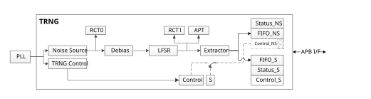
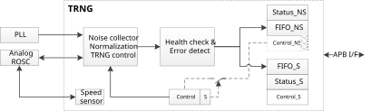

Introduction
The TRNG is a true random number generator that provides full entropy outputs to the application as 32-bit samples. It is composed of a live entropy source and an internal conditioning component.
The TRNG has been tested under NIST-Random Test.
Features
The TRNG delivers 32-bit true random numbers, produced by entropy source.
The TRNG is embedded with a health test unit and an error management unit.
Two independent FIFOs: FIFO_NS and FIFO_S, FIFO_S has a higher priority.
The throughput of the TRNG is up to about 2Mbps.
The TRNG delivers 32-bit true random numbers, produced by entropy source.
The TRNG is embedded with a health test unit and an error management unit.
Two independent FIFOs: FIFO_NS and FIFO_S, FIFO_S has a higher priority.
The throughput of the TRNG is up to about 5Mbps.
Block Diagram
The block diagram of TRNG is shown as below.
{kind=link}

TRNG block diagram
The TRNG includes the following sub-modules:
Clock
TRNG bus clock is 40MHz.
Noise Source
The noise source is digital OSC, as a random number source, it is internally composed of ring oscillator.
TRNG control
A bit is added to control whether the control register can be accessed from non-secure world.
Ensure that the default setting for OSC can work. ROM will use it only without configuring ROSC.
This area is the real control register, and the Control_S is the access window in the secure world, Control_NS is the access window in the non-secure world.
Debias and LFSR and Extractor
A serial post-processing circuit
RCT and APT
Two health tests of NIST specification
Control_S
This area is the access window in the secure world; the real address is “Control”.
Status_S
Indicates the available data in FIFO_S.
Indicates whether an error has happened.
FIFO_S
FIFO size is 256 bits.
Only have one window register instead of all the registers.
Read and return all zero when FIFO is empty.
When the available data is less than 128 bits, hardware will fill the FIFO_S to full in a high priority.
Control_NS
This area is the access window in the non-secure world; the real address is “Control”.
Only can be accessed when S bit in Control is 0.
Status_NS
Indicates the available data in FIFO_NS
Indicates whether an error has happened.
- FIFO_NS
FIFO size is 128 bits.
Only have one window register instead of all the registers.
Read and returns all zero when FIFO is empty.
This FIFO has a lower priority than FIFO_S. If available data is less than 128 bits in FIFO_S, hardware will not feed any data to this FIFO.
The block diagram of TRNG is shown as below.
{kind=link}

TRNG block diagram
The TRNG includes the following sub-modules:
PLL
The PLL is a 300MHz~660MHz clock, and will be enabled by hardware.
Analog ROSC
The ROSC is a dedicated OSC, it can generate a random clock of 4MHz ~ 7MHz.
Take how to avoid power leakage into consideration when TRNG is power off.
Speed sensor
Use APB clock, 40MHz.
TRNG control
A bit is added to control whether the control register can be accessed from non-secure world.
Ensure that the default setting for OSC can work. ROM will use it only without configuring ROSC.
This area is the real control register, and the Control_S is the access window in the secure world, Control_NS is the access window in the non-secure world.
Health check and error detect
This block should work with the default setting.
Any error can trigger an interrupt, which will be used by software to reset the whole TRNG.
This block has an internal 1024 bits FIFO, which guarantees all the output has passed the APT test.
Control_S
This area is the access window in the secure world; the real address is “Control”.
Status_S
Indicates the available data in FIFO_S.
Indicates whether an error has happened.
FIFO_S
FIFO size is 256 bits.
Only have one window register instead of all the registers.
Read and return all zero when FIFO is empty.
When the available data is less than 128 bits, hardware will fill the FIFO_S to full in a high priority.
Control_NS
This area is the access window in the non-secure world; the real address is “Control”.
All the registers can be accessed only when
SECURITY_CONTROLfiled in Control Register is 0xA.
Status_NS
Indicates the available data in FIFO_NS
Indicates whether an error has happened.
- FIFO_NS
FIFO size is 128 bits.
Only have one window register instead of all the registers.
Read and returns all zero when FIFO is empty.
This FIFO has a lower priority than FIFO_S. If available data is less than 128 bits in FIFO_S, hardware will not feed any data to this FIFO.
If you need to run the system with security attributes, it is suggested to configure TRNG as secure so that the Control Register can only be accessed from secure world.
When a large amount of random data is required both by secure world and non-secure world simultaneously, request from secure world will be satisfied first for the former has a higher priority. After the request from secure world ends, random data will be generated to satisfy non-secure world.
It is suggested to call
_rand()function to get a 32-bit random data.
Usage
If you need to run the system with security attributes, it is suggested to configure TRNG as secure so that the Control Register can only be accessed from secure world.
When a large amount of random data is required both by secure world and non-secure world simultaneously, request from secure world will be satisfied first for the former has a higher priority. After the request from secure world ends, random data will be generated to satisfy non-secure world.
It is suggested to call
_rand()function to get a 32-bit random data.